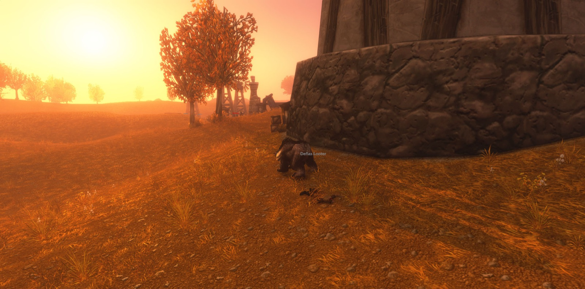
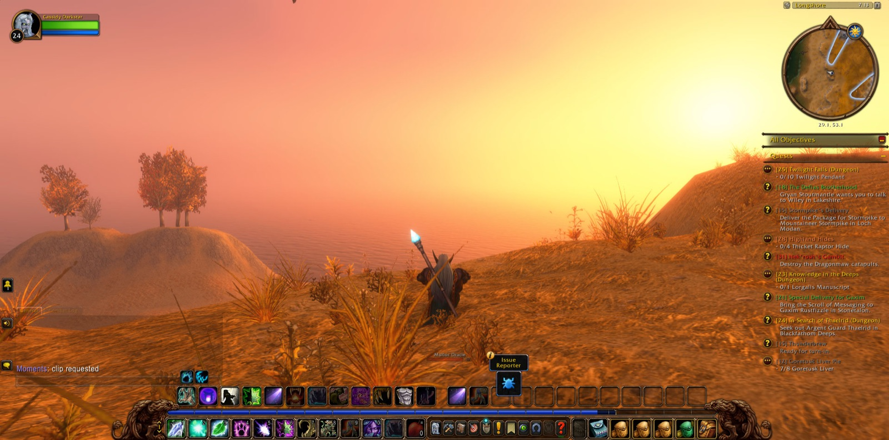
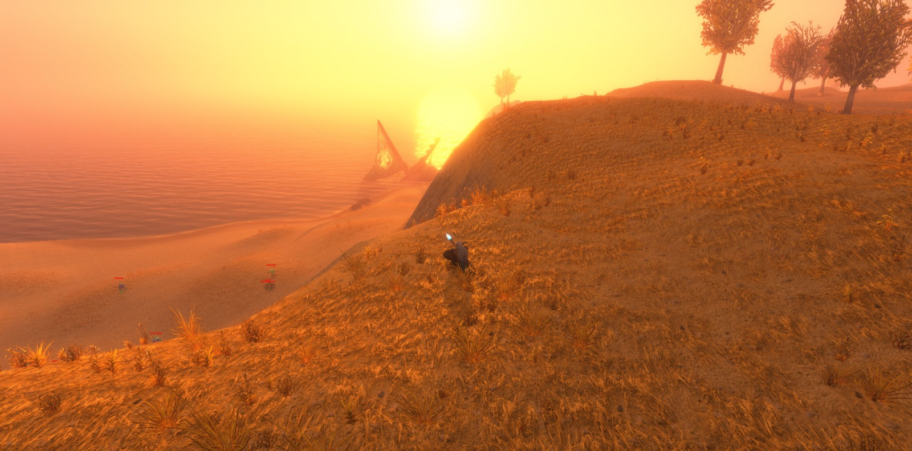
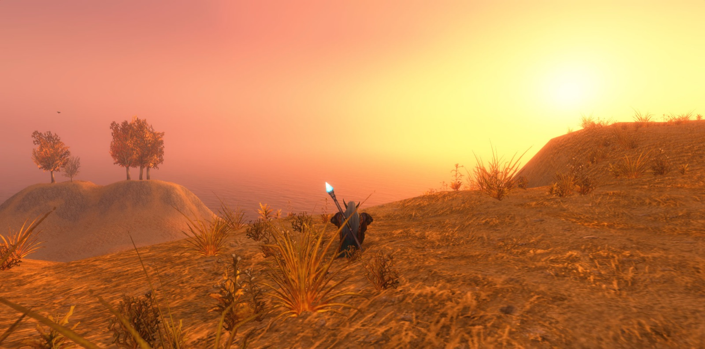
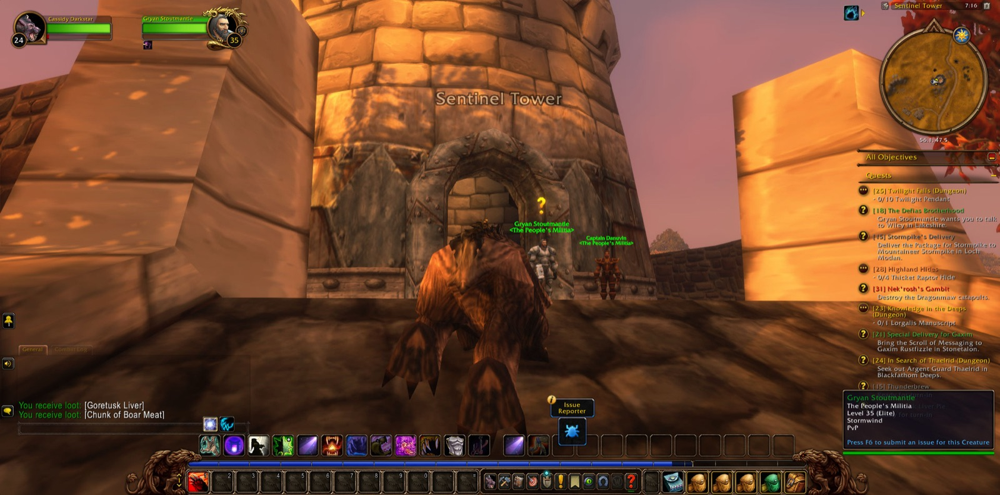
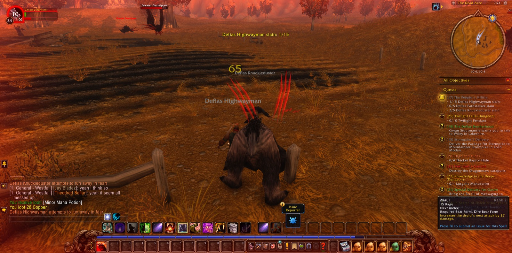

Cassidy Darkstar took up the road again in Moonbrook, in the south of Westfall, and there he was marked as one who had walked these lands in their first days. From Moonbrook he went to Demont's Place and back again. Then he went north to Alexston Farmstead, where the Defias Looters had made their haunt. He fell there once, as travellers sometimes do. The road brought him back by Sentinel Hill and Stendel's Pond to the farmstead, and he took up the work where he had left it. He stayed until fifteen of the Looters were slain, as the errand called The People's Militia required, and he paused to take a picture of that place before he went on.

The errand was only half done, for the Defias Pillagers remained. Cassidy turned south again to Moonbrook, then back to Alexston Farmstead, and then west to Longshore. There he stopped and took three pictures in quick succession, as though something in that place had asked to be remembered. He moved between Longshore and the farmstead, and when he left, fifteen Pillagers were slain. Along the way he had also gathered eight Goretusk Livers. That was a humbler errand, but it was not one he had forgotten.


So he came up to Sentinel Hill and entered Sentinel Tower, and he took a picture as he crossed its threshold. There The People's Militia was declared fulfilled. A new charge was laid on him at once, and it bore the same name, for the militia of Westfall had further need of him. He did not linger. He went north to Saldean's Farm and delivered the livers, and so the errand of Goretusk Liver Pie was ended. Two tasks were seen through, and the second was as honest as the first.

From Saldean's Farm he turned south to The Dead Acre. There he slew his first Defias Highwayman, a new foe for him in that country, and he took a picture to mark it. The Dead Acre did not let him go without cost, and he returned to Sentinel Hill and to the Tower before he set out once more. He was the same in strength as when he had begun, but he was surer of the land. He went back past The Dead Acre and down through Moonbrook. He came at last to Demont's Place, where the road had begun, and there he stopped. The road ran on from Demont's Place as it ran from every place, and Cassidy Darkstar would take it again when he was ready.
